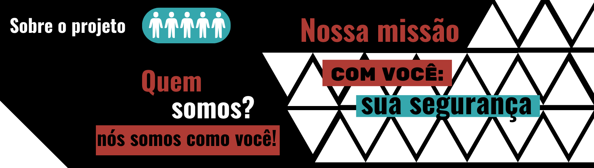

Estado treina mil servidores para utilização de sistema digital de gestão de processos
USP abre editorial para bolsas de pós-doutorado voltadas a pesquisadores negros
Especialistas debatem estratégias para controle do câncer em evento do Ciclo ILP-FAPESP
Sabesp isenta de cobrança 600 famílias afetadas por chuvas em São Sebastião
Noites frias: governo tem ação de acolhimento a pessoas em situação de rua na capital